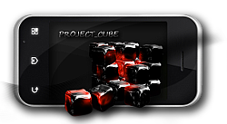
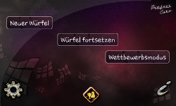
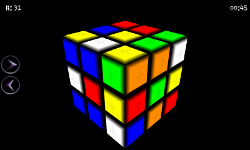
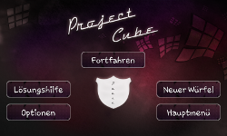

{ project } Win7 Logon
This was my latest project. It's a Windows 7 Logon editor with a lot of functionality. You are able to:
Advanced Logon Editor Download You can also see the source code:
Advanced Logon Editor Sources on GitHub
- Change all images.
- Change important sizes and margins.
- Hide or show elements.
- Change the used fonts.
- Change important positions of elements.
- ... and much more.
- You can apply saved skins.
- You can apply a backup. The backup is the logon state before you first started the program.
Advanced Logon Editor Download You can also see the source code:
Advanced Logon Editor Sources on GitHub
{ project } PS2
This is a PlayStation 2 Casemod.
- Mainboard: E45M1-I Deluxe
- Memory: Corsair DDR3 RAM
- Harddrive: OCZ VTX4-2SAT3-128G Vertex4 128GB interne SSD (6,4cm (2,5 Zoll), SATA III)
- DvD-Drive: Sony Optiarc Slim
- Fan: Noiseblocker BlackSilentPro PE-P Gehäuselüfter 92mm
- PSU: pico-PSU-120WI-25V
- additional Cables
- On/Off Switches
- Glue
- Time
- Nerves
{ project } Cube
Project Cube is the name of a little Android App which is basically a OpenGL Rubics Cube and some additional features. This was the logo while development:

Some friends and I made it as a assignment for our university. My task was the GUI and some of the controlstructures.



You can try the program, just download it here:
Project Cube apk Download
Project Cube apk Download